Suas perguntas, novos caminhos.
Uma relação que ficou confusa, uma decisão que você vem adiando ou aquela sensação de não saber por onde começar…
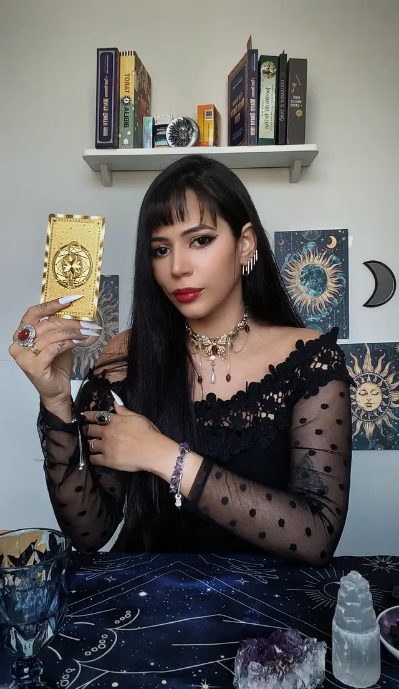
Você pode trazer suas dúvidas pra minha mesa.
Uma leitura de tarô para trazer clareza sobre o que você está vivendo e te ajudar a pensar nos próximos passos, com acolhimento, sinceridade e espaço para você se abrir.
Atendimento pelo WhatsApp, com fotos das cartas, explicação em áudio e aconselhamento final.
Quero minha leituraNão sabe o que perguntar?
Me conta o que está acontecendo.
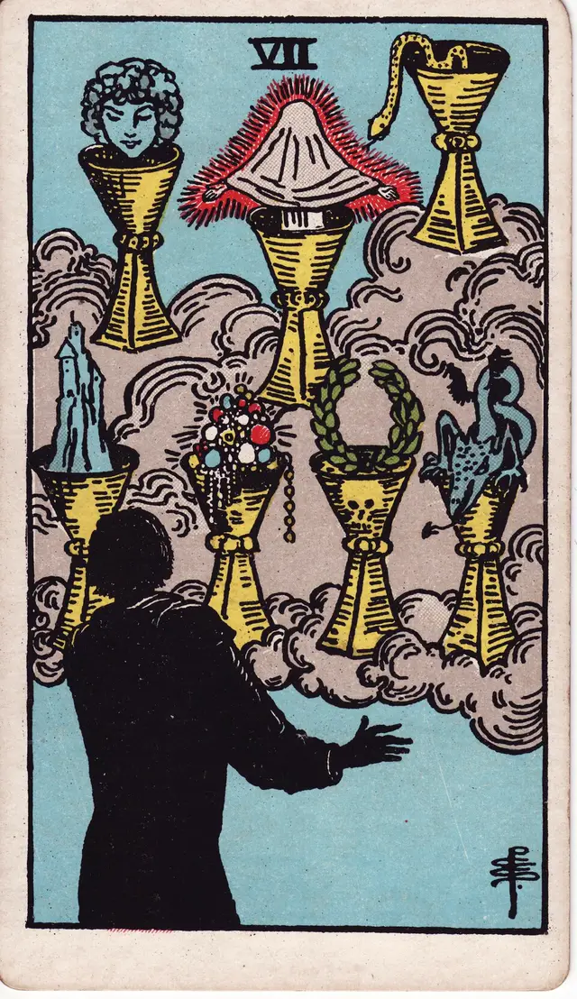
Você não precisa chegar com uma lista pronta ou saber explicar tudo direitinho.
Às vezes, tem tanta coisa acontecendo que fica difícil entender até por onde começar. Você me conta o que está vivendo e eu te ajudo a organizar as perguntas.
A gente define tudo juntas, antes da tiragem, para que cada pergunta faça sentido para o seu momento.
Quero conversar com a SamaraO que você quer olhar com mais clareza?
Amor e relacionamentos
Uma aproximação, um afastamento, uma história mal resolvida ou dúvidas sobre o rumo de uma relação. Um espaço para olhar para o vínculo e para o que você deseja viver.
Trabalho e projetos
Uma mudança de trabalho, um negócio começando ou um projeto que ainda não saiu do papel. Podemos explorar possibilidades, desafios e atitudes que merecem atenção.
Vida financeira
Sua relação com o dinheiro, suas prioridades e os comportamentos que vale observar para pensar nos próximos passos.
Autoconhecimento e espiritualidade
Padrões que se repetem, dificuldade de se posicionar, conexão com a própria intuição e questões que pedem um olhar mais cuidadoso para si.
Escolhas e novos caminhos
Quando você está entre possibilidades e quer refletir sobre o que cada caminho pode envolver.
Você escolhe de 1 a 10 perguntas
Pode ser uma dúvida específica ou várias questões que você quer compreender melhor.
As perguntas podem ser sobre um mesmo assunto ou diferentes áreas da sua vida. Se não souber quantas precisa, me conta sua situação e eu te ajudo a organizar.
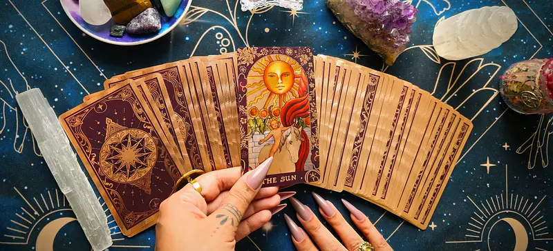
Todas as opções incluem:
- Fotos das cartas da sua tiragem.
- Áudios com respostas aprofundadas.
- Um aconselhamento final.
Como funciona
Você me conta
Nossa conversa começa pelo WhatsApp. Você fala sobre o que está vivendo e o que gostaria de compreender.
Definimos suas perguntas
Organizamos as questões e combinamos os detalhes do atendimento. Se você escolher de 1 a 5 perguntas, o horário é combinado antes do pagamento.
Eu faço a leitura
Depois de definirmos as perguntas, faço a tiragem e envio as fotos das cartas e os áudios explicando a leitura.
Você recebe um aconselhamento final
Além das respostas, a leitura traz orientações para você refletir sobre como lidar com a situação e pensar nos próximos passos.
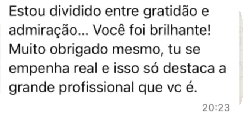
Quando você recebe sua leitura?
De 1 a 5 perguntas: no horário combinado
O atendimento acontece pelo WhatsApp, com envio das fotos e dos áudios durante a consulta.
Combinamos o horário antes do pagamento, para você se organizar e acompanhar a leitura.
De 6 a 10 perguntas: em até 24 horas
A entrega completa acontece em até 24 horas depois que o pagamento estiver confirmado e todas as perguntas estiverem definidas.
Você não precisa ficar online durante a tiragem. Pode ouvir os áudios e olhar as cartas no seu tempo.
Ficou com dúvida sobre a interpretação?
Depois de receber sua leitura, você tem até 24 horas para me enviar dúvidas sobre a interpretação.
Se alguma explicação não ficou clara, pode me chamar para esclarecer.
Esse espaço é para entender melhor o que foi apresentado na leitura. Perguntas novas são cobradas à parte.
Sua leitura também pode virar um resumo para guardar
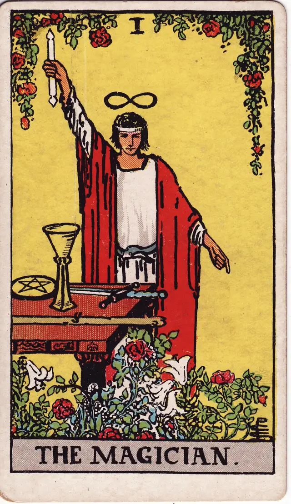
Se quiser, você pode contratar um resumo em PDF com os principais pontos e conselhos da tiragem.
É uma forma de voltar à leitura com calma, reler as orientações e ter tudo organizado por escrito.
O resumo é opcional, contratado à parte, e entregue em até 48 horas após o envio da leitura.
Quero incluir o resumo em PDF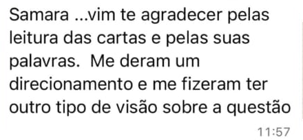
Prazer, eu sou a Samara
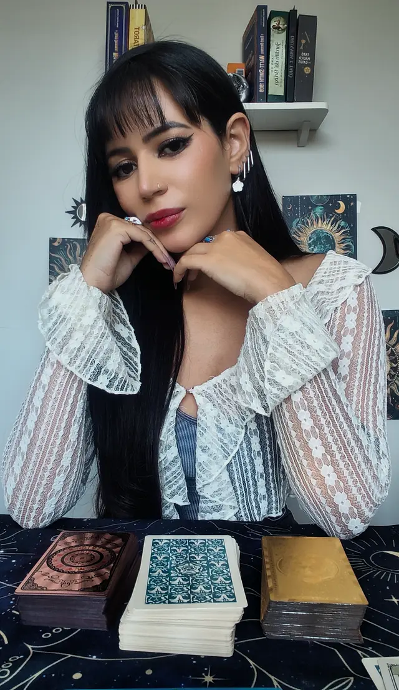
Sou taróloga e gosto de ouvir a história que existe por trás de cada pergunta.
Sei que, às vezes, uma pergunta curtinha carrega muita coisa: saudade, medo, expectativa, uma decisão difícil ou algo que você ainda não conseguiu conversar com ninguém.
Na minha mesa tem espaço pra falar disso. Tem troca, acolhimento, conversa e até risada no meio de um assunto sério.
Meu jeito de atender é próximo e sincero. Eu explico as cartas com uma linguagem simples, sem fazer você se sentir julgada pelo que está vivendo.
Quero que você compreenda sua leitura e encontre nela pontos que te ajudem a refletir sobre a própria vida, respeitando seu tempo e suas escolhas.
Quero levar minhas perguntas pra sua mesaVocê pode ouvir as cartas e continuar escolhendo seu caminho
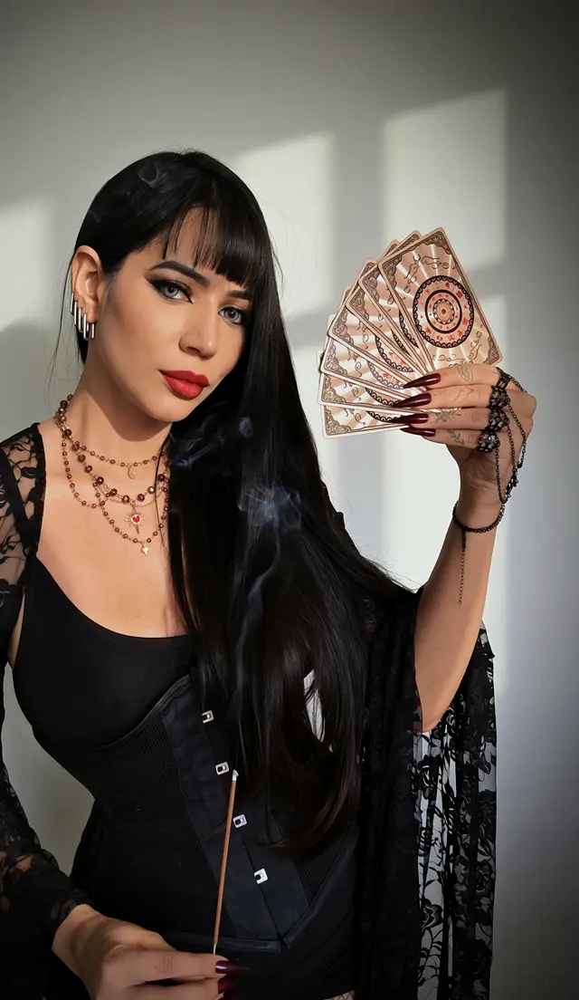
O tarô permite olhar para uma situação por outros ângulos, refletir sobre possibilidades e perceber o que merece atenção.
As cartas apontam tendências, não um futuro fechado. Suas atitudes, as escolhas das outras pessoas e as mudanças da vida também fazem parte dessa história.
Quando aparece algo difícil, eu explico com cuidado e considero os conselhos da leitura. Você continua tendo espaço para decidir o que faz sentido para você.
Dúvidas frequentes
Nunca fiz uma leitura de tarô. Posso marcar?
Pode, sim. Eu te explico como funciona e te ajudo a organizar as perguntas. Você não precisa conhecer as cartas.
Preciso saber exatamente o que perguntar?
Não. Você pode começar me contando o que está acontecendo. Juntas, transformamos suas dúvidas em perguntas.
Preciso fazer uma chamada de vídeo?
Não. O atendimento acontece pelo WhatsApp, com fotos das cartas e áudios explicativos.
Posso perguntar sobre assuntos diferentes?
Sim. Você pode escolher de 1 a 10 perguntas e abordar um mesmo assunto ou diferentes áreas da sua vida.
Preciso ficar online durante o atendimento?
Nas leituras de 1 a 5 perguntas, combinamos um horário para o atendimento, e as fotos e os áudios são enviados durante a consulta. Nas leituras de 6 a 10 perguntas, você não precisa ficar online e pode ouvir tudo depois.
Quando começa a contar o prazo de 24 horas?
Para leituras de 6 a 10 perguntas, o prazo começa quando as duas etapas estiverem concluídas: pagamento confirmado e todas as perguntas definidas.
Posso tirar dúvidas depois de receber?
Sim. Você tem até 24 horas após receber a leitura para enviar dúvidas sobre a interpretação. Perguntas novas são cobradas à parte.
O resumo em PDF está incluído?
O resumo é opcional e contratado à parte. Ele reúne os principais pontos e conselhos por escrito e é entregue em até 48 horas após o envio da leitura.
O que aparece nas cartas vai acontecer com certeza?
Não. O tarô aponta tendências e possibilidades. O futuro também é influenciado por escolhas, atitudes e mudanças que acontecem ao longo do caminho.
Como faço para agendar?
É só me chamar pelo botão abaixo. Você me conta o que procura e combinamos as perguntas e os detalhes do atendimento pelo WhatsApp.
Mais feedbacks
![Feedback de uma consulente: Samaraaaaaa, sobre as tiragem das cartas, você foi maravilhosa em tudo que falou, eu digo porque fez muito sentindo com muita coisa mesmo sem você saber, e deixou muito claro toda a informação que você passou, não fiquei com dúvidas ou quis fazer mais perguntas porque simplesmente foi tudo muito claro, e coisas que eu precisava escutar que me fez abrir os olhos pra coisas que talvez eu já sabia mas não levava em conta até escutar de alguém. Obrigaaaaaada, você arrasou dms!](fotos/feedbacks/tiragem.webp)
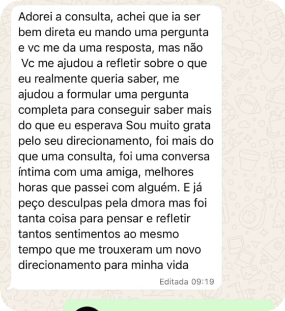
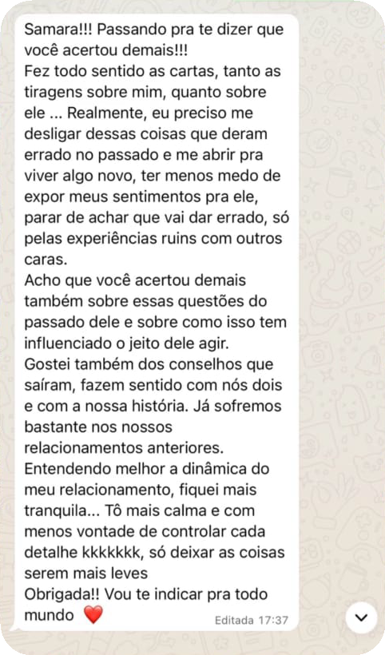
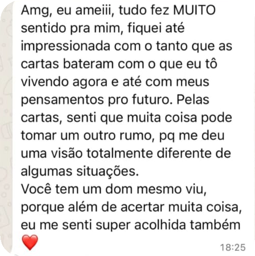
Qual pergunta você está guardando aí?
Pode ser aquela que volta quando você deita a cabeça no travesseiro. Ou uma situação que você já pensou mil vezes e ainda não conseguiu entender.
Você não precisa organizar tudo antes de me chamar.
Me conta o que está acontecendo. A gente começa por aí.
Quero conversar sobre minha leitura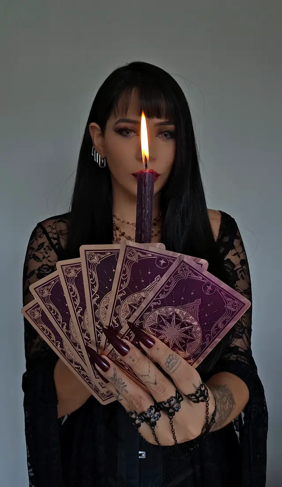